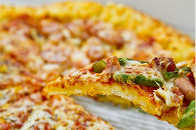
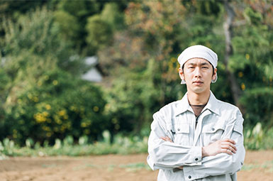
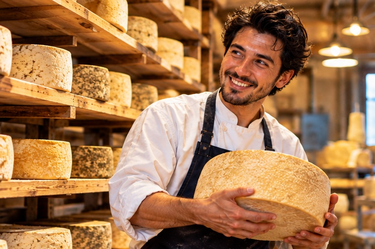
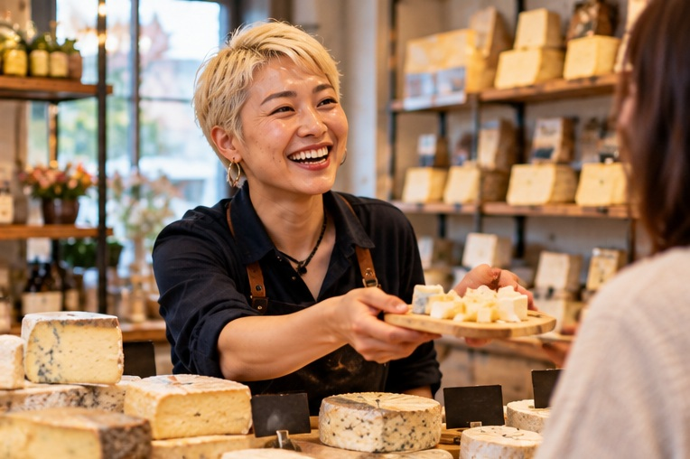
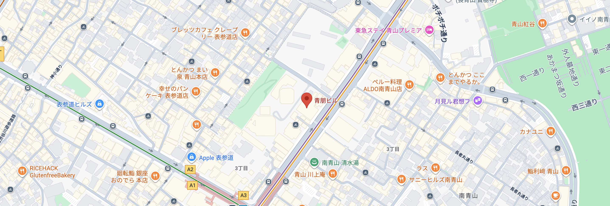

C
Cheese ACADEMY
TOKYO
TOKYO
ABOUT
チーズアカデミーについて
チーズアカデミーは、チーズ職人養成学校です。
チーズの素晴らしさを、自給自足を通じて、
できるだけ多くの人に知っていただきたい。
そして、食卓にはチーズがいつもあった、
あの頃の当たり前をこの手で取り戻したい。
そんな思いから、チーズ職人養成学校 「チーズアカデミーTOKYO」は歩みを始めています。
卒業後、チーズ自給自足のバックアップはもちろんのこと、
チーズ職人への就職・転職もサポートします。




COURSE
未経験からでもスタートができるよう、カリキュラムは多くの専門家や
現役チーズ職人のアドバイスのもと、作られました。

本格的な農園を使った実地研修
チーズアカデミーでは、本格的な農園を使った実地研修を行うことができます。 プロとして活躍するチーズ職人も使用するような、 広大で環境も整った農園を余すところなく使い、 卒業時には本格的なチーズを自分の手で作れる実践力の養成を目指します。
必要な知識もしっかりと取得
チーズ作りには、しっかりとした食に関する知識が欠かせません。 チーズアカデミーでは、一流講師陣による、 チーズ作りに必要ないろはを余すところなく学べます。 チーズそのものでなく、栄養学全般を学ぶことも可能ですので、 チーズ以外への展開も夢ではないでしょう。

卒業制作はティスティング審査あり
チーズアカデミーでは最後の２ヶ月で卒業制作を実施。 卒業制作として、チーズ作りを実際に行います。 卒業後、一般参加によるティスティング審査があるため、 作り手の目線だけでなく、消費者の目線から、 卒業制作作品としてのチーズを、しっかりと評価いただくことができます。
NEWS
ニュース

2026/11/18
チーズアカデミー卒業生のコスゲさんによる チーズだけをふんだんに使用した話題のピザ屋 「Kosuge Pizza」が渋谷でオープンしました！
2026/11/18
チーズアカデミー卒業生のコスゲさんによる チーズだけをふんだんに使用した話題のピザ屋 「Kosuge Pizza」が渋谷でオープンしました！
2026/11/18
チーズアカデミー卒業生のコスゲさんによる チーズだけをふんだんに使用した話題のピザ屋 「Kosuge Pizza」が渋谷でオープンしました！
GRADUATES
卒業生、それぞれのチーズ人生。
チーズを学んだ、その先にある3つの物語。

STORY 01 / 就職
未経験から、憧れのチーズ職人へ。
田中 健太（28歳）
入学のきっかけ
営業職として働いていましたが、ものづくりへの憧れから入学しました。
卒業後の進路
北海道のチーズ工房に就職。現在はモッツァレラチーズの製造を担当しています。
後輩へのメッセージ
好きなことを仕事にするって、こういうことなんだと思いました。

STORY 02 / 転職
35歳から、新しい人生を始めました。
佐藤 美咲（35歳）
入学のきっかけ
事務職として10年間働き、好きな食に関わる仕事に挑戦したくなりました。
卒業後の進路
東京のチーズ専門店へ転職。現在は接客や商品企画を担当しています。
後輩へのメッセージ
何歳からでも、好きなことへの挑戦は始められます。
STORY 03 / 独立・開業
地元の牛乳から、自分だけのチーズを。
山本 大輔（42歳）
入学のきっかけ
飲食店で働く中で、いつか自分の商品を作りたいと思うようになりました。
卒業後の進路
牧場で経験を積み、地元に小さなチーズ工房を開業しました。
後輩へのメッセージ
自分のチーズが誰かの食卓に並ぶ。それが一番の喜びです。
Access
会社情報

学校名
チーズアカデミーTOKYO
事業所所在地
〒107-0061 東京都港区北青山3-5-6 青朋ビル2F
TEL
03-5413-5045
FAX
03-5413-5046
dummy@cheeseacademy.tokyo
CONTACT
説明会お申し込み・お問い合わせ